Soft Body
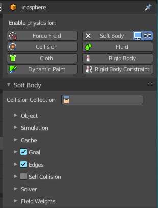
Soft body simulation is used for simulating soft deformable objects. It was designed primarily for adding secondary motion to animation, like jiggle for body parts of a moving character.
It also works for simulating more general soft objects that bend, deform and react to forces like gravity and wind, or collide with other objects.
The soft body simulation works by combining existing animation on the object with forces acting on it. There are exterior forces like gravity or force fields and interior forces that hold the vertices together. This way you can simulate the shapes that an object would take on in reality if it had volume, was filled with something, and was acted on by real forces.
Soft bodies can interact with other objects through Collision. They can interact with themselves through Self-Collision.
The result of the soft body simulation can be converted to a static object. You can also bake edit the simulation, means edit intermediate results and run the simulation from there.
Soft bodies can be used for:
- Jiggle on moving characters.
- Elastic and deformable objects made of materials like rubber or gelatin.
- Tree branches moving in the wind, swinging ropes, and the like.
- Flags, wide sleeves, cushions or other simple fabric reacting to forces.
Soft body simulation works for all objects that have vertices or control points (meshes, curves, surfaces, and lattices).
Soft body simulation is a dynamic effect. It needs an animation.
Tips
Soft bodies work especially well if the objects have an even vertex distribution. You need enough vertices for good collisions. You change the deformation (the stiffness) if you add more vertices in a certain region.
The calculation of collisions may take a long time. If something is not visible, why calculate it?
To speed up the collision calculation it is often useful to collide with an additional, simpler, invisible, somewhat larger object.
Use soft bodies only where it makes sense. If you try to cover a body mesh with a tight piece of cloth and animate solely with soft body, you will have no success. Self-collision of soft body hair may be activated, but that is a path that you have to wander alone. We will deal with Collisions in detail later.
Try and use a Lattice or a Curve Guide soft body instead of the object itself. This may be magnitudes faster.
Soft Body panel
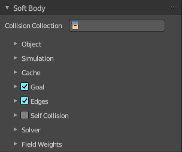
Collision Collection
Limit the soft body simulation to objects in a collection
Object subpanel
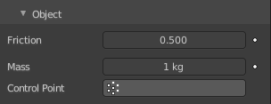
| Entry | What it does |
|---|---|
| Friction | The friction of the surrounding medium. Generally friction dampens a movement. The larger the friction, the more viscous is the medium. Friction always appears when a vertex moves relative to its surround medium. |
| Mass | Mass value for vertices. Larger mass slows down acceleration, except for gravity where the motion is constant regardless of mass. Larger mass means larger inertia, so also braking a soft body is more difficult. |
| Control Point | You can paint weights and use a specified vertex group for mass values. |
Simulation subpanel
Speed
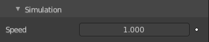
You can control the internal timing of the soft body system with this value. It sets the correlation between frame rate and tempo of the simulation. A free falling body should cover a distance of about ten meters after one second. You can adjust the scale of your scene and simulation with this correlation. If you render with 25 frames per second, you will have to set Speed to 1.3.
Cache subpanel
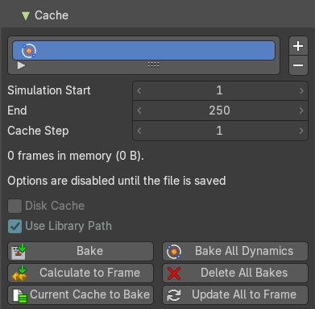
The soft body simulation can be cached in memory or stored on a drive. This improves real-time response and avoids unnecessary recalculation of particles. But creates also big files.
The cloth system uses a unified system for caching and baking (together with cloth and Emitter particle).
Important: The file needs to be saved after baking. When the file is not saved then some options are not available. Important: The cloth settings becomes unavailable once the particle cache is baked. You need to remove the bake when you want to change the settings.
Hints
The simulation is only calculated for positive frames in between the Start and End frames of the Cache panel, whether you bake or not. So if you want a simulation that is longer than the default frame range, you have to change the End frame.
When an animation is played, each physics system writes each frame to the cache. Note that for the cache to fill up, one has to start the playback before or on the frame that the simulation starts.
The cache is cleared automatically on changes. But not on all changes, so it may be necessary to free it manually. For example if you change a force field.
The system is protected against changes after baking. If for example the mesh changes the simulation is not calculated anew.
The bake result can be cleared by clicking on the Free Bake button in the simulation cache settings.
A simulation can only be edited in Particle Edit Mode when it has been baked in memory. And cannot be edited if the Disk Cache is used.
If you are not allowed to write to the required sub directory caching will not happen. For example if your blend-file path is very long and your operating system has a limit on the path length that is supported.
Be careful with the sequence of modifiers in the modifier stack. You may have a different number of faces in the 3D Viewport and for rendering (For example when using subdivision surface). Then the rendered result may be very different from what you see in the 3D Viewport.
Caches List
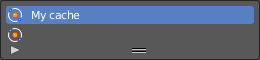
The list of available caches. The caches have no name by default. Double click to add a name.
You can store and manage multiple caches at once for the same physics object. The active cache is the one that gets used.
| Entry | What it does |
|---|---|
| Drag Handler | The two vertical lines at the end is a handler with which you can expand the list. |
| Search Field | You can expand a search field at the bottom of the list. Type in your term and hit enter to filter for your term. · Invert: Exclude the search term instead of searching for it. · Sort by Name: Sort the List by name. |
| Entry | What it does |
|---|---|
| Add New Cache | Add a new cache. |
| Delete current Cache | Deletes the selected cache. |
| Simulation start | The start frame of the simulation. |
| End | The end frame of the simulation. |
| Cache Step | Number of frames between cached frames. |
| Info string | An info string. Gives different messages, dependent of the status. |
Disk Cache
Save the cache externally in a folder instead inside of the blend file. The cache of a baked simulation will be stored inside the blend-file when you save it. A folder named blendcache_[filename] will then be created alongside the blend-file. The blend-file must be saved first and then again.
Use Library Path
Share the disk cache when the physics object is linked into another blend-file.
When this option is enabled, linked versions of the object will reference the same disk cache. Otherwise linked versions of the object will use independent caches.
Compression
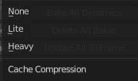
The compression level for cached files. It becomes available when Disk Cache is ticked
| Entry | What it does |
|---|---|
| None | Do not compress the cache. |
| Light | Compression will optimize the speed of compressing/decompressing operations over file size. |
| Heavy | Compression will result in smaller cache files, but requires more CPU power to compress / decompress. |
Bake / Delete Bake
Start baking. Once you have baked the cache the button turns into a Delete bake button. And allows you to remove the bake.
The baking progress can be seen in the footer. You need to be in Object Mode to bake.
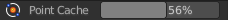
| Entry | What it does |
|---|---|
| Calculate To Frame | Bake only up to the current frame. Limited by End frame set in the cache settings. |
| Current Cache to Bake | Store any temporarily cached simulation data as a bake. Note that playing the animation will try to simulate any visible physics simulations. Depending on the physics type, this data may be temporarily cached. Normally such temporary caches are cleared when an object or setting is modified, but converting it to a bake will “save”it. |
| Bake All Dynamics | Bake all physics systems in the scene, even those of different types. Useful for baking complex setups involving interactions between different physics types. |
| Delete All Bakes | Free bakes of all physics systems in the scene, even those of different types. |
| Update All To Frame | Bake all physics systems in the scene to the current frame. |
Goal subpanel
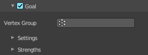
Use the motion from animations (F-curves, armatures, parents, lattices, etc.) in the simulation. The “goal” is the desired end position for vertices based on this animation.
Vertex Group
Use a vertex group to allow per-vertex goal weights (multiplied by the Default goal).
Goal Settings sub subpanel
Stiffness
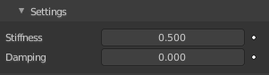
The spring stiffness for Goal. A low value creates very weak springs (more flexible “attachment” to the goal), a high value creates a strong spring (a stiffer “attachment” to the goal).
Damping
The friction coefficient for Goal. Higher values give damping of the spring effect (little jiggle), and the movement will soon come to an end.
Goal Strength sub subpanel
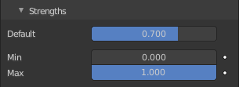
| Entry | What it does |
|---|---|
| Default | Goal weight/strength for all vertices when no Vertex Group is assigned. If you use a vertex group the weight of a vertex defines its goal. |
| Min / Max | When you use a vertex group, you can use the Minimum and Maximum to fine-tune (clamp) the weight values. The lowest vertex weight will become Minimum, the highest value becomes Maximum. |
Edges subpanel
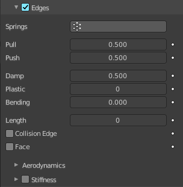
| Entry | What it does |
|---|---|
| Use Edges | Allow the edges in a mesh object to act like springs. See interior forces. |
| Springs | Use a specified vertex group for spring strength values. |
Pull
The spring stiffness for edges (how much the edges are allowed to stretch). A low value means very weak springs (a very elastic material), a high value is a strong spring (a stiffer material) that resists being pulled apart.
A value of 0.5 is latex, 0.9 is like a sweater, 0.999 is a highly-starched napkin or leather. The soft body simulation tends to get unstable if you use a value of 0.999, so you should lower this value a bit if that happens.
| Entry | What it does |
|---|---|
| Push | How much the soft body resists being scrunched together, like a compression spring. Low values for fabric, high values for inflated objects and stiff material. |
| Damp | The friction for edge springs. High values (max of 50) dampen the Push/Pull effect and calm down the cloth. |
| Plastic | Permanent deformation of the object after a collision. The vertices take a new position without applying the modifier. |
| Bending | This option creates virtual connections between a vertex and the vertices connected to its neighbors. This includes diagonal edges. Damping also applies to these connections. |
| Length | The edges can shrink or be blown up. This value is given in percent, 0 disables this function. 100% means no change, the body keeps 100% of its size. |
| Collision Edge | Checks for edges of the soft body mesh colliding. |
Face
Checks for any portion of the face of the soft body mesh colliding (computationally intensive!). While Face enabled is great, and solves lots of collision errors, there does not seem to be any dampening settings for it, so parts of the soft body object near a collision mesh tend to “jitter” as they bounce off and fall back, even when there is no motion of any meshes. Edge collision has dampening, so that can be controlled, but Deflection dampening value on a collision object does not seem to affect the face collision.
Aerodynamics sub subpanel
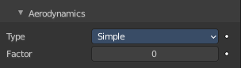
Force from surrounding media. See exterior forces for details.
Type
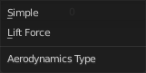
| Entry | What it does |
|---|---|
| Simple | Edges receive a drag force from the surrounding media. |
| Lift Force | Edges receive a lift force when passing through the surrounding media. |
| Factor | How much aerodynamic force to use. Try a value of 30 at first. |
Stiffness subpanel
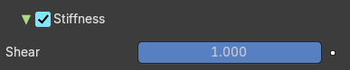
Add diagonal springs at quad faces. This stops quad faces to collapse completely on collisions.
Shear
Stiffness of the virtual springs created for quad faces.
Self Collision subpanel
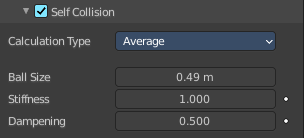
Note: Self-Collision needs Edges enabled!
Allow self collision and avoid self intersection. Every vertex is surrounded with an elastic virtual ball. Vertices may not penetrate the balls of other vertices. If you want a good result you may have to adjust the size of these balls.
Calculation Type
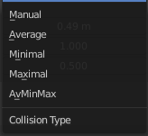
| Entry | What it does |
|---|---|
| Manual | The Ball Size directly sets the ball size. |
| Average | The average length of all edges attached to the vertex is calculated and then multiplied with the Ball Size setting. Works well with evenly distributed vertices. |
| Minimal / Maximal | The ball size is as large as the smallest/largest spring length of the vertex multiplied with the Ball Size. |
| Average Min Max | Size = ((Min + Max)/2) × Ball Size. |
Ball Size
Fraction of the length of attached edges. The edge length is computed based on the chosen algorithm. This setting is the factor that is multiplied by the spring length. It is a spherical distance (radius) within which, if another vertex of the same mesh enters, the vertex starts to deflect in order to avoid a self-collision. Set this value to the fractional distance between vertices that you want them to have their own “space”. Too high of a value will include too many vertices all the time and slow down the calculation. Too low of a level will let other vertices get too close and thus possibly intersect because there will not be enough time to slow them down.
| Entry | What it does |
|---|---|
| Stiffness | How elastic that ball of personal space is. A high stiffness means that the vertex reacts immediately to another vertex enters their space. |
| Dampening | How the vertex reacts. A low value just slows down the vertex as it gets too close. A high value repulses it. Collisions with other objects are set in the (other) Collision panel. To collide with another object they have to share at least one common layer. |
Solver subpanel
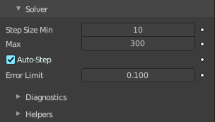
The settings in the Soft Body Solver panel determine the accuracy of the simulation.
| Entry | What it does |
|---|---|
| Step Size Min | Minimum simulation steps per frame. Increase this value, if the soft body misses fast-moving collision objects. |
| Max | Maximum simulation steps per frame. Normally the number of simulation steps is set dynamically (with the Error Limit) but you have probably a good reason to change it. |
| Auto-Step | Use velocities for automatic step sizes. Helps the Solver figure out how much work it needs to do based on how fast things are moving. |
Error Limit
Rules the overall quality of the solution delivered. Default 0.1. The most critical setting that defines how precise the solver should check for collisions. Start with a value that is half the average edge length. If there are visible errors, jitter, or over-exaggerated responses, decrease the value. The solver keeps track of how “bad” it is doing and the Error Limit causes the solver to do some “adaptive step sizing”.
Diagnostics subpanel
Print Performance to Console
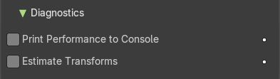
Prints on the console how the solver is doing.
Estimate Transforms
Estimate matrix, split to COM, ROT, SCALE.
Helpers subpanel
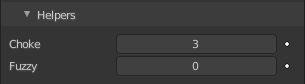
These settings allow you to control how Blender will react (deform) the soft body once it either gets close to or actually intersects (cuts into) another collision object on the same layer.
| Entry | What it does |
|---|---|
| Choke | Calms down (reduces the exit velocity of) a vertex or edge once it penetrates a collision mesh. |
| Fuzzy | Fuzziness while on collision, high values make collision handling faster but less stable. Simulation is faster, but less accurate. |
Field Weights subpanel
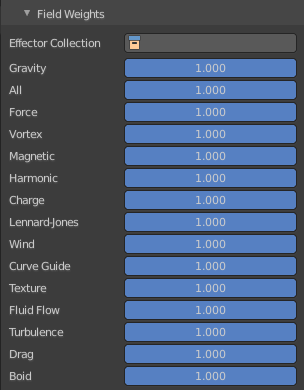
Adjust how strong other forces influences the soft body simulation.